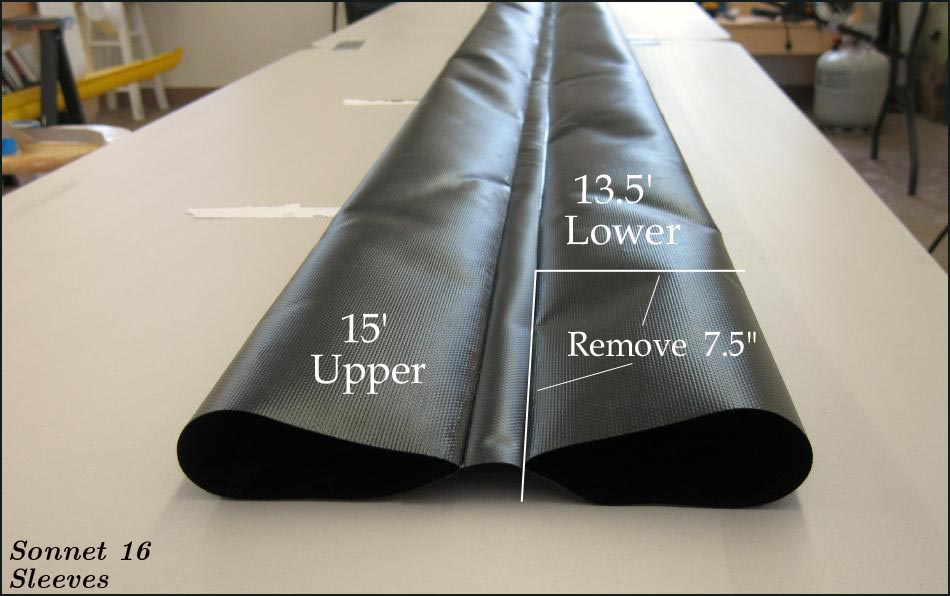

| Sonnet 16 | Menu Previous Page Next Page |
|

The sponson sleeves are made of 10oz. Coverene PVC. There are two sleeves containing 2 sponsons each. The top sponsons are 15' X 3.5'( Folbot Greenland II) and the bottom sponsons are 13.5'X 3.5" (Folbot Kodiak). After making the 15' sleeves, remove 7.5" from each end of the lower sponson to achive a 13.5' length.
|
|